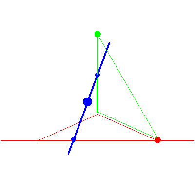
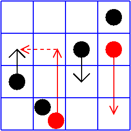

The line meeting a fixed point in P3


The line meeting a fixed point in P3 |
|
|  |
In the second stage of the specialization sequence, the line rotates about the point until it contains the fixed point. Here, the solution line rotates until it meets the fixed point. A lot happens in this step, which is the swap possibility in the middle square of Table 2/Figure 8 in GLR. The red checkers swap rows with the leftmost red checker following the leftmost black checker. Its final position is the common point of intersection of the green line, the red line/point, and the blue line. |
| We remark that the second stay possibility in the middle square of Table 2/Figure 8 in GLR does not occur here; the further condition that the blue line contains a fixed point prevents that case from contributing. |  |